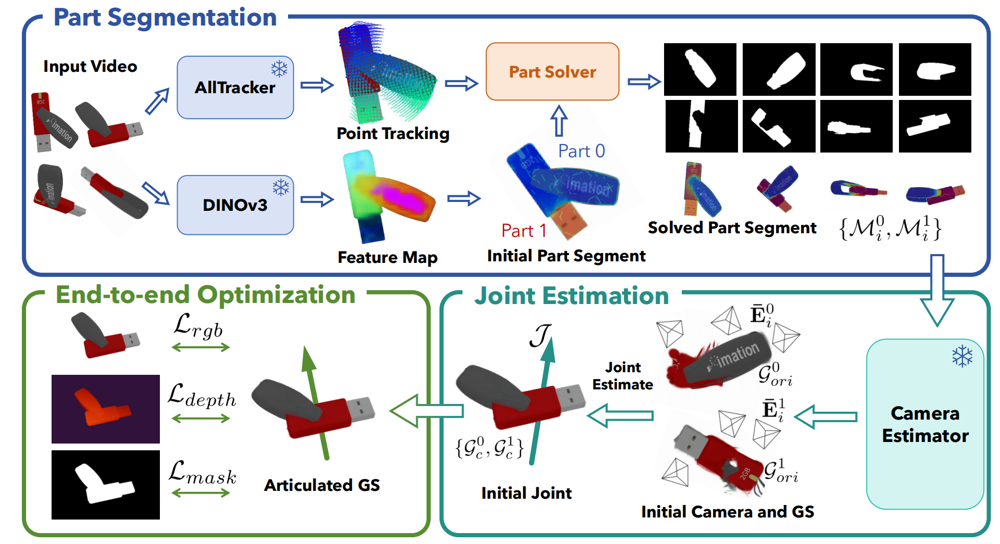
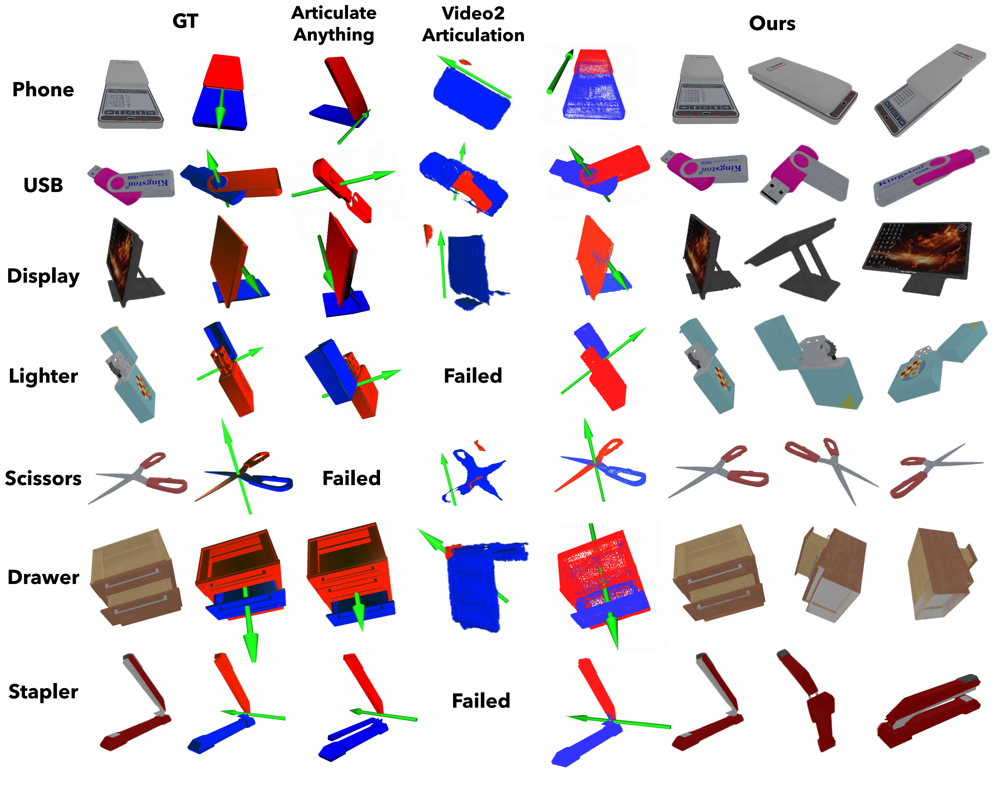
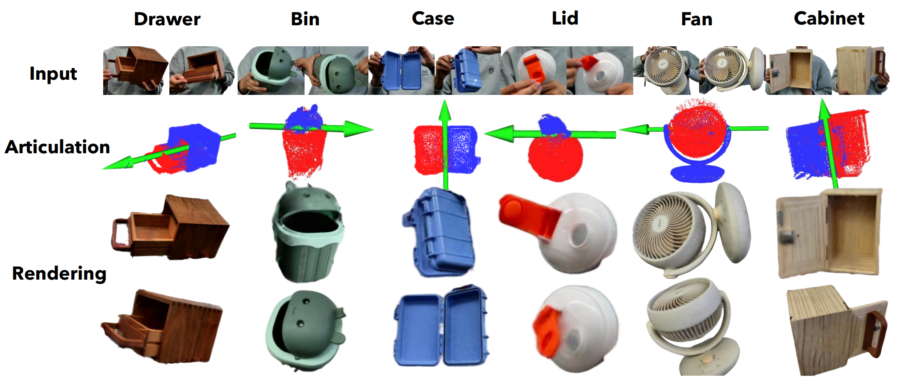

The increasing need for augmented reality and robotics is urging for articulated object reconstruction with high scalability. However, the existing settings of reconstructing from discrete articulation states or casual monocular video need non-trivial axes alignment or suffer from insufficient coverage, limiting the applications.
In this paper, we introduce FreeArtGS, a novel method for reconstructing articulated objects under free-moving scenario, a new setting with a simpler setup and high scalability. FreeArtGS combines free-moving part segmentation with joint estimation and end-to-end optimization, taking only a monocular RGB-D video as input. By optimizing with the priors from off-the-shelf point-tracking and feature models, free-moving part segmentation discovers rigid parts from relative motion in unconstrained capture. The joint estimation module proposes a noise-resistant approach to recover joint type and axis robustly from part segmentation. Finally, 3DGS-based end-to-end optimization is implemented to jointly reconstruct visual textures, geometry and joint angles of the articulated object. We perform experiments on two benchmarks and real-world free-moving articulated objects.
Experiments show that FreeArtGS consistently outperforms prior methods in free-moving articulated object reconstruction and remains competitive in the similar previous setting, underscoring the potential of FreeArtGS to serve as an engine for realistic articulated asset building.

Fig. 2. Overview of FreeArtGS. FreeArtGS consists of three modules: (1) free-moving part segmentation, which discovers rigid parts from relative motion in unconstrained capture; (2) joint estimation, which proposes a noise-resistant approach to recover joint type and axis robustly from part segmentation; (3) 3DGS-based end-to-end optimization, which jointly reconstructs visual textures, geometry and joint angles of the articulated object.
Reconstruction results on FreeArt-21. Our method synthesizes high-quality novel views for unconstrained free-moving articulated objects, capturing highly accurate geometry and textures across various relative poses.

Figure 3. Qualitative results on FreeArt-21. We visualize both the articulation and rendering results of our method. The red part and blue part are the identified parts by our method.

Figure 4. Qualitative results on real objects. Our method successfully reconstructs all the objects with correct joints, part geometry and texture.